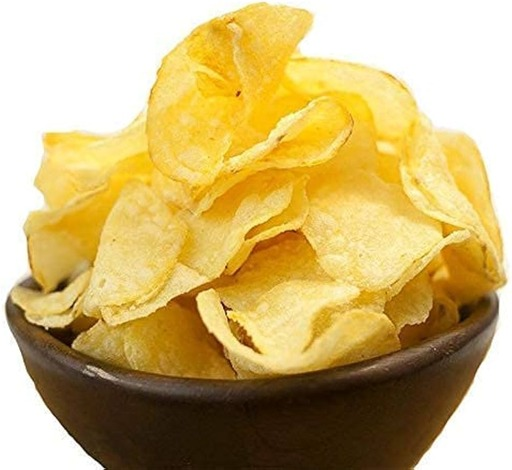

Potato Chips

Fresh, firm, and non-sprouted russet potatoes are the best for making chips.
Ingredients:
- 7 unpeeled medium potatoes (about 2 pounds)
- 2 quarts ice water
- 5 teaspoons salt
- 2 teaspoons garlic powder
- 1-1/2 teaspoons celery salt
- 1-1/2 teaspoons pepper
- Oil for deep-fat frying
Recipe:
- Using a vegetable peeler or metal cheese slicer, cut potatoes into very thin slices. Place in a large bowl; add ice water and salt. Soak for 30 minutes.
- Drain potatoes; place on paper towels and pat dry. In a small bowl, combine the garlic powder, celery salt and pepper; set aside.
- In a cast-iron or other heavy skillet, heat 1-1/2 in. oil to 375°. Fry potatoes in batches until golden brown, 3-4 minutes, stirring frequently.
- Remove with a slotted spoon; drain on paper towels. Immediately sprinkle with seasoning mixture. Store in an airtight container.
Back